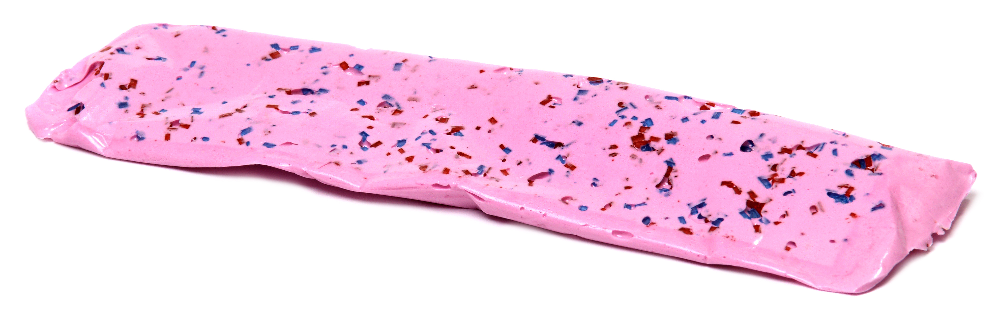
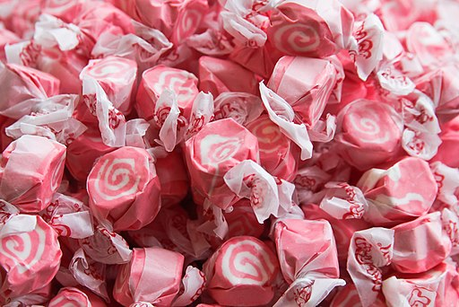
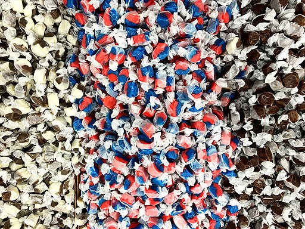

Welcome to the Taffy Maker
ALL THE CANDY YOU DESIRE
Hello and Welcome to the Taffy Maker.
Here we make all type of taffy
So you chosen Taffy!
Excellent!
Now what type of taffy are you?

Are you taffy that is small and round? Easier to eat
Are you sweet and chewy?
Are you taffy with a unique design and texture?
Do you like uniform taffy?
After you make your decision.
Head to the Thanks for playing and see what you won